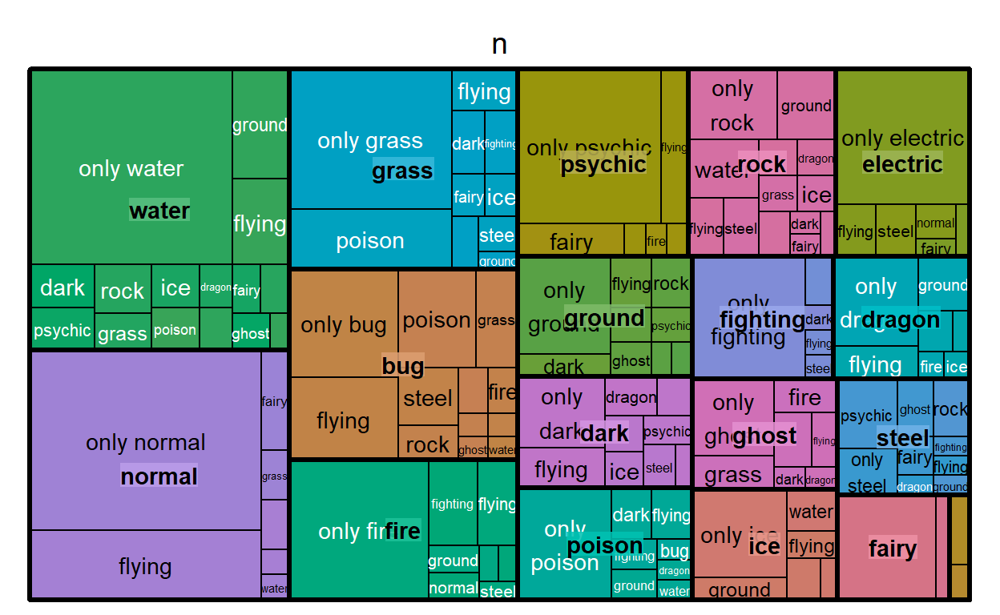
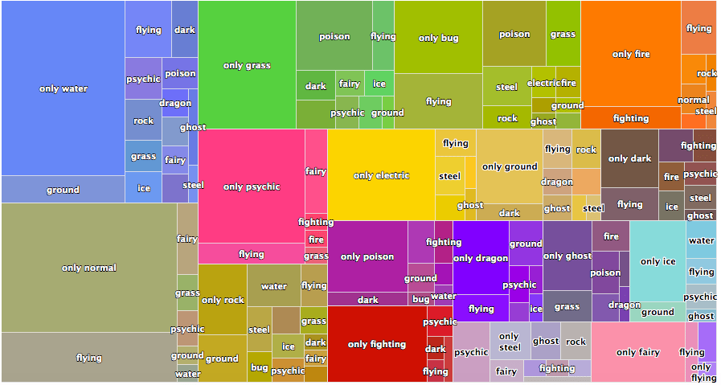
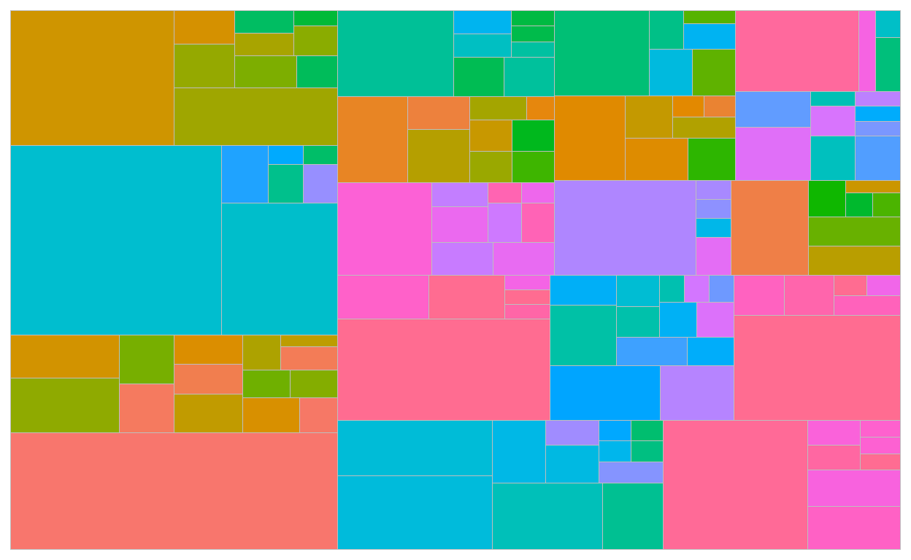
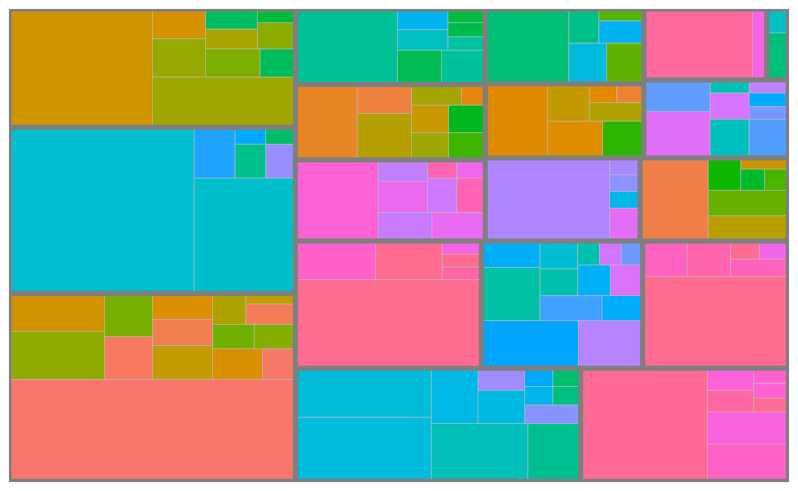
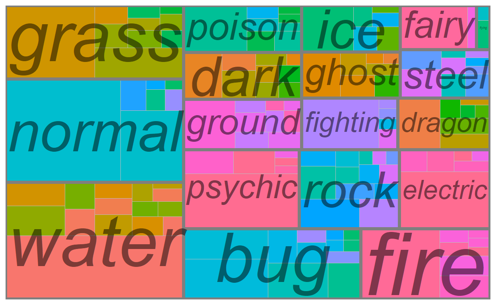
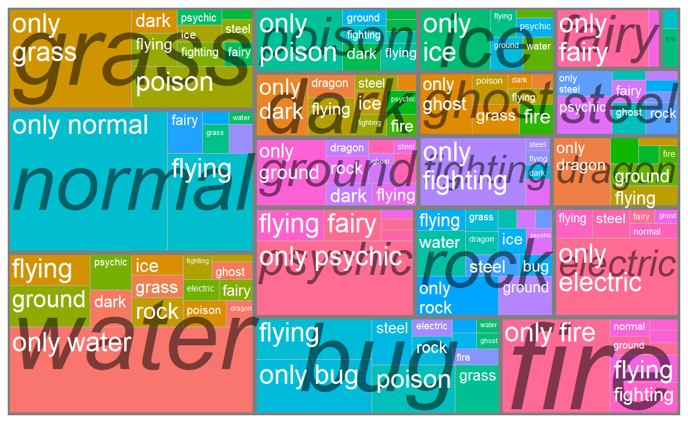
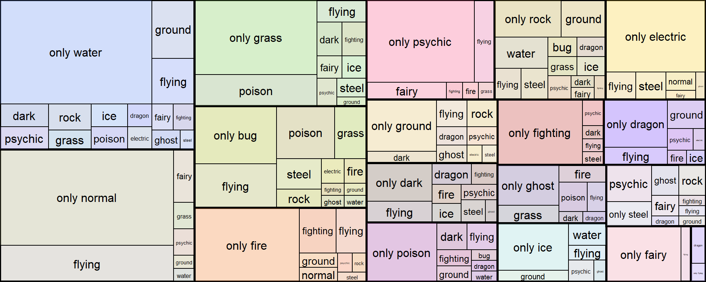
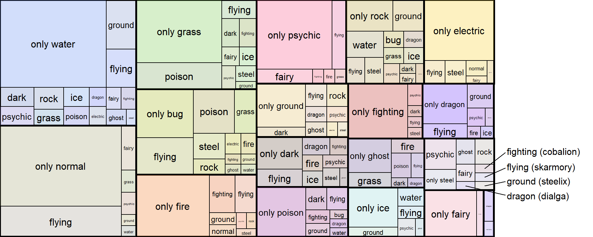

Plotting treemaps with {treemap} and {ggplot2}
June Choe ![]()
To steal the definition from Wikipedia, a treemap is used for “displaying hierarchical data using nested figures, usually rectangles.” There are lots of ways to make one in R, but I didn’t find any one existing solution appealing.
For illustration, let’s take the pokemon dataset from {highcharter} and plot a treemap with it using different methods.
data("pokemon", package = "highcharter")
# Cleaning up data for a treemap
data <- pokemon %>%
select(pokemon, type_1, type_2, color_f) %>%
mutate(type_2 = ifelse(is.na(type_2), paste("only", type_1), type_2)) %>%
group_by(type_1, type_2, color_f) %>%
count(type_1, type_2) %>%
ungroup()
head(data, 5)
| type_1 | type_2 | color_f | n |
|---|---|---|---|
| bug | electric | #BBBD23 | 2 |
| bug | fighting | #AD9721 | 1 |
| bug | fire | #B9AA23 | 2 |
| bug | flying | #A8AE52 | 13 |
| bug | ghost | #9AA03D | 1 |
1. {treemap}
Here’s a plot made from the {treemap} package:

It actually doesn’t look too bad, but this package hasn’t been updated for 3 years and there aren’t a lot of options for customization. For the options that do exist, they’re a big list of additional arguments to the main workhorse function, treemap(), which feels a bit restrictive if you’re used to {ggplot}’s modular and layered grammar. So while it’s very simple to use, I’d probably use it only for exploring the data for myself.
2. {highcharter}
All the way on the other side of this ease<—>customizability spectrum is {highcharter} which is arguably the most powerful data visualization package in R.
With highcharter, you can turn the previous graph into the following:

This looks much better, and it’s even interactive (although this particular one isn’t because I just copy pasted the image from this blog post from 2018). I’d use {highcharter} except that there isn’t a great documentation on plotting treemaps, and it definitely doesn’t help that {highcharter} has a pretty steep learning curve, even if you have a lot of experience with {ggplot2}.
The main problem I ran into is that the function hc_add_series_treemap() that was used to create the above graph is now depreciated. It redirects you to use hctreemap() which itself is also depreciated. That finally redirects you to use hctreemap2() which is pretty sparse in documentation and use-cases, and overall not very transparent IMO.
3. {treemapify}
{treemapify} is a ggplot solution to plotting treemaps.
Here’s a plot of the pokemon dataset, adopting the example code from the vignette. Since it follows the layered grammar of ggplot, I figured I’d show what each of the four layers outlined in the code does:
library(treemapify)
ggplot(data, aes(area = n, fill = color_f, label = type_2,
subgroup = type_1)) +
# 1. Draw type_2 borders and fill colors
geom_treemap() +
# 2. Draw type_1 borders
geom_treemap_subgroup_border() +
# 3. Print type_1 text
geom_treemap_subgroup_text(place = "centre", grow = T, alpha = 0.5, colour = "black",
fontface = "italic", min.size = 0) +
# 4. Print type_2 text
geom_treemap_text(colour = "white", place = "topleft", reflow = T) +
theme(legend.position = 0)
geom_treemap() draws type_2 borders and fill colors

geom_treemap_subgroup_border() draws type_1 borders

geom_treemap_subgroup_text() prints type_1 text

geom_treemap_text() prints type_2 text

I find this the most appealing out of the three options and I do recommend this package, but I’m personally a bit hesistant to use it for three reasons:
I don’t want to learn a whole ’nother family of
geom_*s just to plot treemaps.Some of the ggplot “add-ons” that I like don’t really transfer over. For example, I can’t use
geom_text_repel()from{ggrepel}because I have to use{treemapify}’s own text geoms likegeom_treemap_subgroup_text()andgeom_treemap_text().Customization options are kind of a mouthful, and I’ve yet to see a nice-looking treemap that was plotted using this package. There are a couple example treemaps in the vignette but none of them look particularly good. An independently produced example here doesn’t look super great either.
A Mixed (Hack-ish?) Solution
Basically, I’m very lazy and I want to avoid learning any new packages or functions as much as possible.
I’ve come up with a very simple solution to my self-created problem, which is to draw treemaps using geom_rect() with a little help from the {treemap} package introduced earlier.
So apparently, there’s a cool feature in treemap::treemap() where you can extract the plotting data.
You can do this by pulling the tm object from the plot function side-effect, and the underlying dataframe used for plotting looks like this.1:
tm <- treemap(
dtf = data,
index = c("type_1", "type_2"),
vSize = "n",
vColor = "color_f",
type = 'color' # {treemap}'s equivalent of scale_fill_identity()
)
head(tm$tm)
| type_1 | type_2 | vSize | vColor | stdErr | vColorValue | level | x0 | y0 | w | h | color |
|---|---|---|---|---|---|---|---|---|---|---|---|
| bug | electric | 2 | #BBBD23 | 2 | NA | 2 | 0.4556639 | 0.3501299 | 0.0319174 | 0.0872727 | #BBBD23 |
| bug | fighting | 1 | #AD9721 | 1 | NA | 2 | 0.4556639 | 0.3064935 | 0.0319174 | 0.0436364 | #AD9721 |
| bug | fire | 2 | #B9AA23 | 2 | NA | 2 | 0.4875812 | 0.3501299 | 0.0319174 | 0.0872727 | #B9AA23 |
| bug | flying | 13 | #A8AE52 | 13 | NA | 2 | 0.2757660 | 0.2628571 | 0.1160631 | 0.1560000 | #A8AE52 |
| bug | ghost | 1 | #9AA03D | 1 | NA | 2 | 0.4556639 | 0.2628571 | 0.0319174 | 0.0436364 | #9AA03D |
| bug | grass | 6 | #9CBB2B | 6 | NA | 2 | 0.4744388 | 0.4374026 | 0.0450598 | 0.1854545 | #9CBB2B |
We can simply use this data to recreate the treemap that was made with {treemapify} - except this time we have more flexibility!
First, we do some data cleaning:
tm_plot_data <- tm$tm %>%
# calculate end coordinates with height and width
mutate(x1 = x0 + w,
y1 = y0 + h) %>%
# get center coordinates for labels
mutate(x = (x0+x1)/2,
y = (y0+y1)/2) %>%
# mark primary groupings and set boundary thickness
mutate(primary_group = ifelse(is.na(type_2), 1.2, .5)) %>%
# remove colors from primary groupings (since secondary is already colored)
mutate(color = ifelse(is.na(type_2), NA, color))
Then we plot. It looks like I can recreate a lot of it with a little help from the {ggfittext} package that was in the source code2:
ggplot(tm_plot_data, aes(xmin = x0, ymin = y0, xmax = x1, ymax = y1)) +
# add fill and borders for groups and subgroups
geom_rect(aes(fill = color, size = primary_group),
show.legend = FALSE, color = "black", alpha = .3) +
scale_fill_identity() +
# set thicker lines for group borders
scale_size(range = range(tm_plot_data$primary_group)) +
# add labels
ggfittext::geom_fit_text(aes(label = type_2), min.size = 1) +
# options
scale_x_continuous(expand = c(0, 0)) +
scale_y_continuous(expand = c(0, 0)) +
theme_void()

Now, I can be a lot more flexible with my customizations.
For example, let’s say I wanted to isolate and emphasize the secondary types that have unique type-combinations with steel, AND also provide the name of the corresponding pokemon.
I can do this by using geom_text_repel() for a subset of the labels while keeping the same geom_fit_text() setting for the rest of the labels.
tm_plot_data %>%
ggplot(aes(xmin = x0, ymin = y0, xmax = x1, ymax = y1)) +
geom_rect(aes(fill = color, size = primary_group),
show.legend = FALSE, color = "black", alpha = .3) +
scale_fill_identity() +
scale_size(range = range(tm_plot_data$primary_group)) +
ggfittext::geom_fit_text(data = filter(tm_plot_data, type_1 != "steel" | vSize > 1),
aes(label = type_2), min.size = 1) +
# pick out observations of interest and annotate with geom_text_repel
ggrepel::geom_text_repel(
data = filter(tm_plot_data, vSize == 1, type_1 == "steel") %>%
inner_join(pokemon, by = c("type_1", "type_2")),
aes(x = x, y = y, label = glue::glue("{type_2} ({pokemon})")),
color = "black", xlim = c(1.02, NA), size = 4,
direction = "y", vjust = .5, force = 3
) +
# expand x-axis limits to make room for test annotations
scale_x_continuous(limits = c(0, 1.2), expand = c(0, 0)) +
scale_y_continuous(expand = c(0, 0)) +
theme_void()

And that’s our final product! This would’ve been pretty difficult to do with any of the three options I reviewed at the top!
tl;dr - Use treemap() from the {treemap} package to get positions for geom_rect()s and you’re 90% of the way there to plotting a treemap! Apply your favorite styles (especially _text() geoms) from the {ggplot2} ecosystem for finishing touches!
Session Info
R version 4.0.3 (2020-10-10)
Platform: x86_64-w64-mingw32/x64 (64-bit)
Running under: Windows 10 x64 (build 18363)
Matrix products: default
locale:
[1] LC_COLLATE=English_United States.1252
[2] LC_CTYPE=English_United States.1252
[3] LC_MONETARY=English_United States.1252
[4] LC_NUMERIC=C
[5] LC_TIME=English_United States.1252
attached base packages:
[1] stats graphics grDevices datasets utils methods base
other attached packages:
[1] treemapify_2.5.3 treemap_2.4-2 printr_0.1 forcats_0.5.0
[5] stringr_1.4.0 dplyr_1.0.2 purrr_0.3.4 readr_1.4.0
[9] tidyr_1.1.2 tibble_3.0.4 ggplot2_3.3.2 tidyverse_1.3.0
loaded via a namespace (and not attached):
[1] httr_1.4.2 jsonlite_1.7.1 modelr_0.1.8
[4] shiny_1.5.0 assertthat_0.2.1 highr_0.8
[7] blob_1.2.1 renv_0.12.0 cellranger_1.1.0
[10] ggrepel_0.8.2 yaml_2.2.1 pillar_1.4.6
[13] backports_1.1.10 glue_1.4.2 digest_0.6.26
[16] RColorBrewer_1.1-2 promises_1.1.1 rvest_0.3.6
[19] colorspace_1.4-1 htmltools_0.5.0 httpuv_1.5.4
[22] pkgconfig_2.0.3 broom_0.7.2 haven_2.3.1
[25] xtable_1.8-4 scales_1.1.1 later_1.1.0.1
[28] distill_1.0.1 downlit_0.2.0 generics_0.0.2
[31] farver_2.0.3 ellipsis_0.3.1 withr_2.2.0
[34] cli_2.1.0 magrittr_1.5.0.9000 crayon_1.3.4
[37] readxl_1.3.1 mime_0.9 evaluate_0.14
[40] fs_1.5.0 fansi_0.4.1 xml2_1.3.2
[43] tools_4.0.3 data.table_1.13.2 hms_0.5.3
[46] lifecycle_0.2.0 gridBase_0.4-7 munsell_0.5.0
[49] reprex_0.3.0 compiler_4.0.3 rlang_0.4.8
[52] grid_4.0.3 gt_0.2.2 rstudioapi_0.11
[55] igraph_1.2.6 labeling_0.4.2 rmarkdown_2.5
[58] gtable_0.3.0 DBI_1.1.0 R6_2.4.1
[61] lubridate_1.7.9 knitr_1.30 fastmap_1.0.1
[64] prismatic_0.2.0 stringi_1.5.3 Rcpp_1.0.5
[67] vctrs_0.3.4 ggfittext_0.9.0 dbplyr_1.4.4
[70] tidyselect_1.1.0 xfun_0.18Footnotes
You might get a warning referencing something about
data.tablehere. No worries if this happens. The outdated{treemap}source code is built on{data.table}and contains a deprecated argument.↩︎I highly recommend checking
{ggfittext}out! Here’s the github repo. Also, this is more of a note to myself but I had some trouble getting this to work at first because themin.sizeargument defaults to 4, meaning that all fitted text smaller than size 4 are simply not plotted (so I couldn’t getgeom_fit_text()to print anything in my treemap at first). You can compare and see the threshold by looking at thegeom_text_repel()texts in my second example which also has a size of 4.↩︎
Citation
@online{choe2020,
author = {Choe, June},
title = {Plotting Treemaps with \{Treemap\} and \{Ggplot2\}},
date = {2020-06-30},
url = {https://yjunechoe.github.io/posts/2020-06-30-treemap-with-ggplot/},
langid = {en}
}